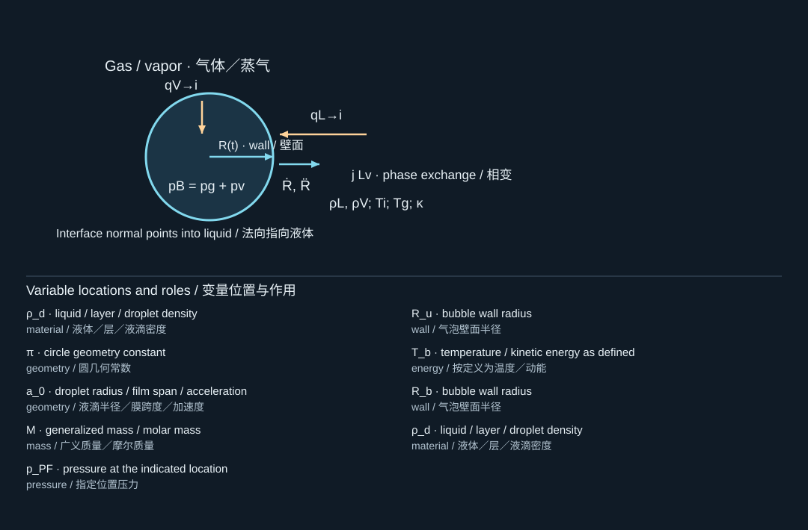

11. Phase-change perfluorocarbon droplets
相变全氟碳液滴
11.1 A droplet is not yet a bubble
液滴还不是气泡
A liquid perfluorocarbon droplet dispersed in water initially has a liquid–liquid interface, often with a stabilizing shell. Vaporization may create a gas-phase cavity within or from that droplet, after which the geometry and constitutive properties change. The initial droplet radius , the radius of an internal vapor nucleus, and the final bubble radius must be kept distinct. [S351, S350, S387]
分散在水中的液态全氟碳液滴，初始具有液—液界面，通常还带有稳定壳层。汽化可在液滴内部或由液滴形成气相空腔，随后几何和本构性质随之改变。必须区分初始液滴半径、内部蒸气核半径和最终气泡半径。[S351, S350, S387]
A bulk normal boiling temperature describes a macroscopic equilibrium condition at a specified pressure. It does not alone determine whether a nanoscale, coated droplet in another liquid will activate during a short laser or ultrasound pulse. Laplace pressure, nucleation sites, pulse duration, absorbed energy, and shell state all matter. [S349, S387, S405, S416]
体相正常沸点描述的是指定压力下的宏观平衡条件。它不能单独决定另一液体中一个带壳纳米液滴是否会在短激光或超声脉冲下激活。Laplace压力、成核位点、脉冲时长、吸收能量和壳层状态都十分重要。[S349, S387, S405, S416]
11.2 Two interfaces, two pressure jumps
两个界面与两个压差
For a simplified spherical liquid droplet in water, before vaporization, write , where represents shell traction. An internal vapor embryo has another balance, approximately at static equilibrium. These are not interchangeable uses of the same radius or surface tension.
对于汽化前水中的简化球形液滴，可写为，其中代表壳层牵引。内部蒸气胚核还具有另一个平衡，在静态近似下为。两个关系中的半径和界面张力不能相互替换。
As an illustrative scale only, take and . The outer Laplace jump is then , before any shell contribution. This example is not a measured value for a particular formulation; it demonstrates why ambient pressure alone is an insufficient internal-pressure estimate.
仅作为示意尺度，取、，则外界面Laplace压差为，尚未计入壳层贡献。这个例子不是某一特定配方的实测值，而是说明为什么不能仅用环境压力估计液滴内部压力。
11.3 Acoustic and optical activation
声激活与光激活
Acoustic droplet vaporization uses an applied acoustic field to change the nucleation environment. Optical droplet vaporization relies on optical absorption, often by a dye or nanoparticle associated with the droplet, to initiate a thermal or coupled process. Absence of an absorbing component at the chosen wavelength is a major source-model issue, not a detail to hide inside an arbitrary efficiency. [S351, S384, S405]
声致液滴汽化利用外加声场改变成核环境。光致液滴汽化依赖光吸收，通常由与液滴相关的染料或纳米颗粒吸收光，启动热过程或耦合过程。如果所选波长下缺乏吸收组分，这就是一个重要声源或热源模型问题，而不是可以藏进任意效率系数的小细节。[S351, S384, S405]
The heterogeneous-nucleation study [S405] examines perfluorohexane emulsions at 1.1 MHz under conditions where its authors distinguish the mechanism from superharmonic focusing. Its controlled comparison of droplet structures is evidence that an internal interface can matter. It does not establish a universal threshold for every perfluorohexane dispersion or every frequency.
非均相成核研究[S405]考察了1.1 MHz下的全氟己烷乳液，并在所研究条件下将其机制与超谐波聚焦区分开来。对不同液滴结构的受控比较说明，内部界面可能十分重要。但该结果并没有建立适用于所有全氟己烷分散体系或所有频率的普适阈值。
11.4 A mass-conservation estimate of expansion
用质量守恒估计膨胀
Suppose, only for a limiting estimate, that an entire pure liquid droplet vaporizes, the vapor behaves ideally, and its final temperature and vapor partial pressure are known. Mass conservation and the ideal-gas law give
仅作为极限估计，假设整个纯液滴完全汽化，蒸气为理想气体，且已知最终温度和该蒸气分压。由质量守恒和理想气体定律，有

The diagram locates the physical system; its key lists the symbols in the formula. Read the definition in the surrounding derivation when a letter has different roles.
图示标出物理体系，图例列出公式中的符号。若某字母有多种作用，应以邻近推导中的定义为准。
is molar mass in , not molecular mass in grams used without conversion. The formula is conditional: it does not prove complete vaporization, determine , or supply latent heat. A partially vaporized droplet, a bubble containing dissolved air, or a shell-limited expansion requires more state variables.
必须采用单位，不能将以克表示的摩尔质量不经换算直接代入。这个公式带有明确条件：它不证明液滴完全汽化，不决定，也不提供汽化潜热。对于部分汽化液滴、含溶解空气的气泡，或受壳层限制的膨胀，需要更多状态变量。
The energy budget must at least consider sensible heating, latent heat, interfacial energy, pressure work, and losses to the surrounding water. Thus a large geometric expansion factor is not by itself a large mechanical conversion efficiency. [S350, S416]
能量预算至少应考虑显热、潜热、界面能、压力功以及向周围水中的热损失。因此，大的几何膨胀倍数本身并不等于高的机械转换效率。[S350, S416]
11.5 Vaporization, persistence, and inertial cavitation
汽化、持续存在与惯性空化
Define three separate observables: activation probability, gas-phase lifetime, and evidence of inertial collapse. Welch and colleagues measure vaporization and inertial-cavitation behavior separately while varying shell composition. Repeated optical activation studies show why pulse history, formulation, and recondensation influence subsequent responses. [S387, S349, S348]
应分别定义三个可观测量：激活概率、气相寿命和惯性塌缩证据。Welch等人在改变壳层组成时，分别测量汽化与惯性空化行为。重复光激活研究则说明，脉冲历史、配方和再凝结会影响后续响应。[S387, S349, S348]
Transient bubbles can be useful for imaging because repeated appearance and disappearance provide contrast or localization information. That application does not imply that each activation is a violent collapse event. Similarly, preclinical delivery experiments demonstrate a particular investigated function, not general biological safety or a mechanical threshold applicable to film transfer. [S252, S384, S406]
瞬态气泡可通过反复出现与消失提供对比或定位信息，因而有助于成像。但这一应用并不意味着每次激活都是剧烈塌缩事件。同样，临床前递送实验展示的是特定研究功能，而不是普遍生物安全性，也不是可以直接用于薄膜转印的机械阈值。[S252, S384, S406]
11.6 A terminology trap in your reading list
阅读清单中的术语陷阱
In [S371], “spontaneous nucleation” refers to formation of perfluorocarbon liquid droplets by a solvent-exchange process, not the appearance of vapor bubbles during cavitation. Before transferring a nucleation argument between papers, identify which phase is being created and which phase is being consumed. The word alone does not identify the physics.
在[S371]中，“自发成核”指通过溶剂交换过程形成全氟碳液滴，而不是空化过程中蒸气泡的出现。在不同论文之间迁移成核论证前，应先明确新形成的是哪一相，以及哪一相被消耗。仅凭“成核”一词无法判断物理机制。